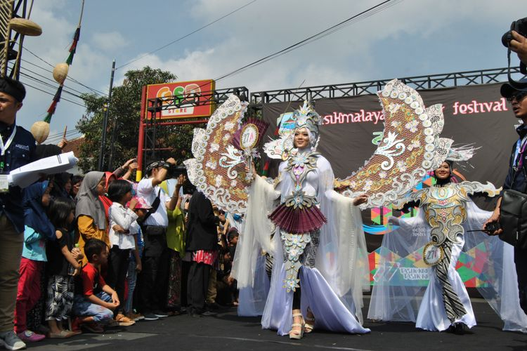
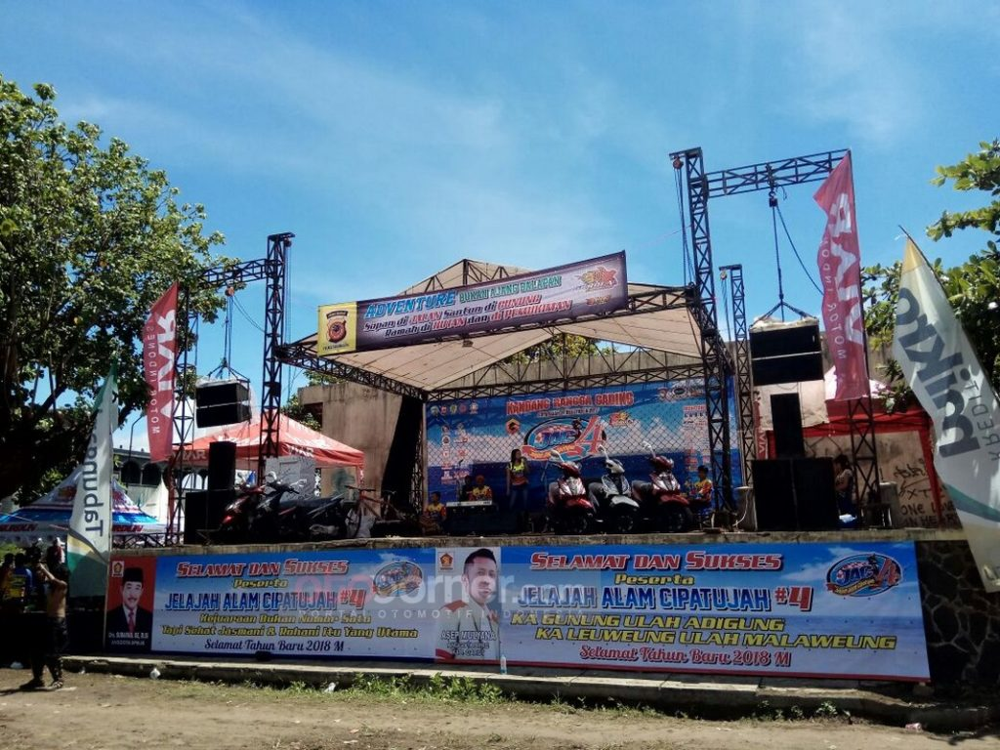
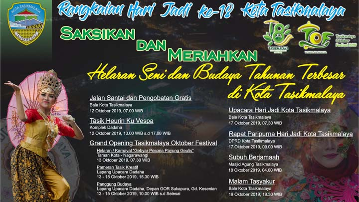
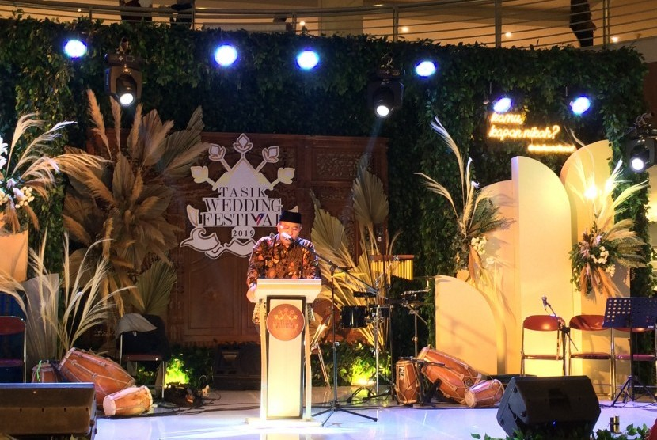
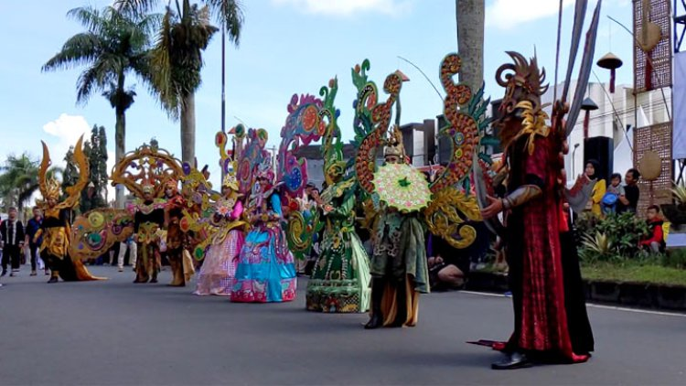
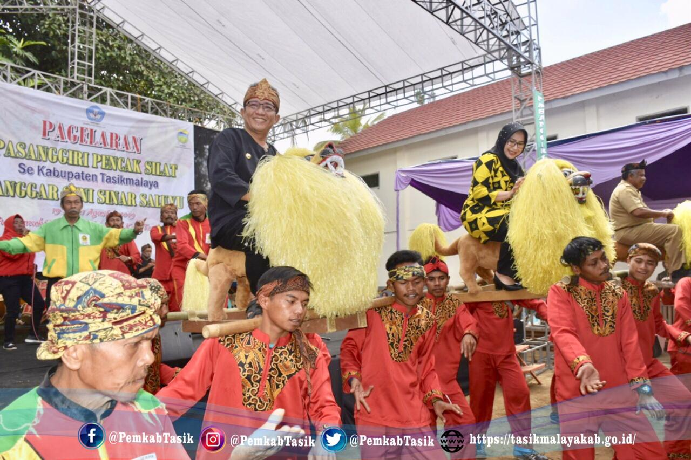
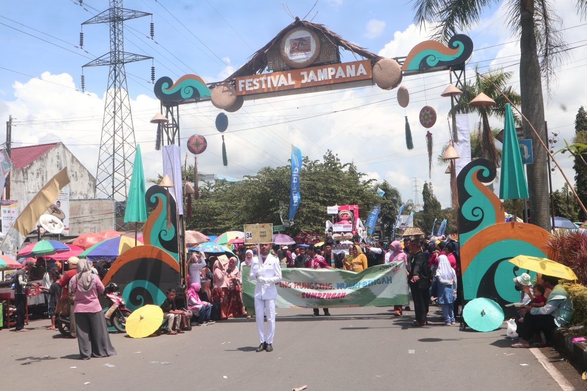
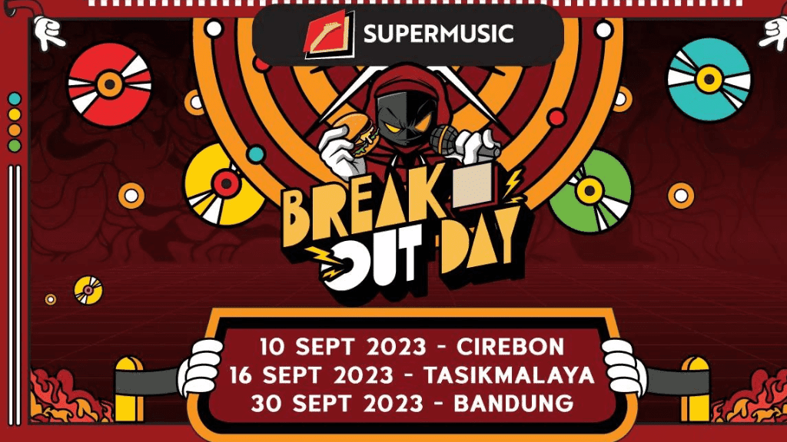

WISATA
TASIKMALAYA
Tasikmalaya Memiliki Beberapa Wisata Alam yang Menawan
sehingga sangat potensial dijadikan sebagai kota tujuan wisata di Indonesia
GUNUNG GALUNGGUNG
2240 MdplGunung ini memiliki 2 puncak yaitu Puncak Dinding Ari dan Puncak Beuticanar, kedua puncak tersebut dapat dijangkau dengan cara mendaki melalui jalur yang tersedia.
GOA SAFARWADI
goa pamijahanDi Tasikmalaya, Jawa Barat tepatnya di Desa Pamijahan, terdapat gua yang merupakan tapak tilas Syekh H Abdul Qadir Djaelani menerima ijazah ilmu agama dari gurunya yaitu Imam Sanusi yang kini diberi nama Gua Safarw Wadi Pamijahan atau Gua Safar Wadi atau disebut juga Gua Pamijahan
KAMPUNG NAGA
dragon villageSeperti permukiman Badui, Kampung Naga menjadi objek kajian antropologi mengenai kehidupan masyarakat pedesaan Sunda pada masa peralihan dari pengaruh Hindu menuju pengaruh Islam di Jawa Barat.

TONJONG CANYON
grand canyon tasikTonjong Canyon, adalah objek wisata Tasikmalaya, yang menawarkan orkestrasi alam, berupa keindahan sungai cantik, dengan warna air hijau, yang dikelilingi oleh batuan purba.

CURUG DENDENG
niagara mini jawa baratCurug Dengdeng Tasikmalaya ini adalah Niagaranya Jawa Barat. Ini karena karakteristik curugnya yang lebar ke samping. Selain itu, akses menuju curug ini sangat mudah dijangkau. Ada juga mitos yang menyebutkan jika Moms mengunjungi area curug ini, Moms bisa enteng jodoh.
KAWAH KARAHA BODAS
kawah belerang dan air panasAda sejumlah aktivitas yang dapat dilakukan pengunjung di objek wisata ini, seperti interpretasi vulkanik, menikmati pemandangan alam, camping, berfoto, dan menjelajah kehidupan pedesaan. Pengunjung juga dapat menikmati air panas dengan berendam maupun mencuci muka.

BATU PARAGA SALOPA
bukit batu berbentuk balok dengan formasi yang unik dan artistikBatu Paraga Slopa merupakan spot wisata yang masih alami dan jarang tersentuh. Tempat wisata ini terdiri dari bukit-bukit batu berbentuk balok dengan formasi yang unik dan artistik. Di antara bebatuan tersebut terdapat sungai yang mengalir cukup deras. Jika beruntung, kamu bahkan bisa melihat monyet ekor panjang berkeliaran di tempat ini.

CURUG CIPARAY
curug kembarCurug ini mempunyai dua aliran air terjun, maka tak heran jika orang-orang sering menyebutnya Curug Kembar. Dihiasi dengan aliran air yang keluar dari tebing batu yang menyangganya. Ketinggian masing-masing aliran Curug Ciparay Tasik berbeda, yakni 55 meter dan 75 meter. Bukan hanya itu, debit airnya pun berbeda. Aliran air yang lebih pendek mempunyai debit air yang lebih besar.

DANAU LEMONA
danau lemona salopaDanau Lemona merupakan kolam ikan besar dengan saung-saung berdiri di pinggirannya. Di Danau Lemona kamu tidak hanya bisa berwisata dan berfoto-foto saja, tetapi juga bisa menikmati aneka olahan ikan air tawar khas Danau Lemona. Untuk sampai ke saung-saung tersebut, kamu harus melewati jembatan gantung yang terbuat dari bambu atau menggunakan perahu tarik yang telah disediakan.
Hidden Gems
Tasikmalaya
Selain Memiliki Beberapa Tempat Wisata
Tasikmalaya juga mempunyai hidden gems juga lohh !!!


{kind=link}
{kind=link}
Sejarah Singkat Tentang TASIKMALAYA
Sejarah berdirinya Kota Tasikmalaya sebagai daerah otonomi tidak terlepas dari sejarah berdirinya Kabupaten Tasikmalaya sebagai daerah kabupaten induknya. Sebelumnya, kota ini merupakan ibu kota dari Kabupaten Tasikmalaya, kemudian meningkat statusnya menjadi Kota Administratif tahun 1976, pada waktu A. Bunyamin menjabat sebagai Bupati Tasikmalaya, dan kemudian menjadi pemerintahan kota yang mandiri pada masa Pemerintahan Kabupaten Tasikmalaya dipimpin oleh bupatinya saat itu H. Suljana W.H.
Tonggak sejarah lahirnya kota Tasikmalaya, mulai digulirkan ketika Kabupaten Tasikmalaya di pimpin oleh A. Bunyamin, Bupati Tasikmalaya periode tahun 1976 – 1981. Pada saat itu melalui peraturan Pemerintah Nomor 22 Tahun 1976 diresmikanlah Kota Administratif Tasikmalaya oleh Menteri Dalam Negeri yang pada waktu itu dijabat oleh H. Amir Machmud. Wali Kota Administratif pertama adalah Drs. H. Oman Roosman, yang dilantik oleh Gubernur Jawa barat, H. Aang Kunaefi. Pada awal pembentukannya, wilayah kota Administratif Tasikmalaya meliputi 3 Kecamatan yaitu Cipedes, Cihideung dan Tawang dengan jumlah desa sebanyak 13 desa. Kemudian pada tahun 2001, dirintislah pembentukan Pemerintah Kota Tasikmalaya oleh Bupati Tasikmalaya, Kol. Inf. H. SuIjana Wirata Hadisubrata (1996 – 2001), dengan membentuk sebuah Tim Sukses Pembentukan Pemerintah Kota Tasikmalaya yang diketuai oleh H. Yeng Ds. Partawinata SH. Melalui proses panjang akhirnya di bawah pimpinan Bupati Drs. Tatang Farhanul Hakim, pada tanggal 17 Oktober 2001 melalui Undang-undang Nomor 10 Tahun 2001, Pembentukan pemerintahan Kota Tasikmalaya sebagai pemerintahan daerah otonom ditetapkan oleh Menteri Dalam Negeri atas nama Presiden RI di Jakarta bersama-sama dengan kota Lhoksumawe, Langsa, Padangsidempuan, Prabumulih, Lubuk Linggau, Pager Alam, Tanjung Pinang, Cimahi, Batu, Sikawang dan Bau-bau. Selanjutnya pada tanggal 18 Oktober 2001 pelantikan Drs. H. Wahyu Suradiharja sebagai Pejabat Wali Kota Tasikmalaya oleh Gubernur Jawa Barat dilaksanakan di Gedung Sate Bandung. Melalui Surat Keputusan No. 133 Tahun 2001, tanggal 13 Desember 2001 Komisi Pemilihan Umum membentuk Panitia Pengisian Keanggotaan Dewan Perwakilan Rakyat Kota Tasikmalaya (PPK-DPRD), selanjutnya pengangkatan anggota DPRD Kota Tasikmalaya disahkan melalui Keputusan Gubernur Jawa Barat, No. 171/Kep.380/Dekon/2002, tanggal 26 April 2002, dan pada tanggal 30 April 2002 keanggotaan DPRD Kota Tasikmalaya pertama diresmikan. Kemudian pada tanggal 14 November 2002, Drs. H. Bubun Bunyamin dilantik sebagai Wali Kota Tasikmalaya, sebagai hasil dari tahapan proses pemilihan yang dilaksanakan oleh legislatif. Sesuai Undang-Undang No. 10 Tahun 2001 bahwa wilayah Kota Tasikmalaya terdiri dari 8 Kecamatan dengan jumlah Kelurahan sebanyak 15 dan Desa sebanyak 54, tetapi dalam perjalanannya melalui Perda No. 30 Tahun 2003 tentang perubahan status Desa menjadi Kelurahan, desa-desa di lingkungan Pemerintah Kota Tasikmalaya berubah statusnya menjadi Kelurahan, oleh karena itu maka jumlah kelurahan menjadi sebanyak 69 kelurahan, sedangkan untuk kecamatan bertambah menjadi 10 kecamatan.
Sang Mutiara dari Priangan Timur itulah julukan bagi kota Tasikmalaya. Kota Tasikmalaya adalah salah satu kota di Provinsi Jawa Barat. Kota ini terletak pada 108° 08′ 38″ – 108° 24′ 02″ BT dan 7° 10′ – 7° 26′ 32″ LS di bagian Tenggara wilayah Provinsi Jawa Barat. Kota ini dahulu adalah sebuah kabupaten, namun seiring dengan perkembangan, maka terbentuklah 2 buah bentuk pemerintahan yaitu Pemerintahan Kabupaten dan Pemerintahan Kota Tasikmalaya.
Events di
Tasikmalaya
Beberapa Kegiatan Yang Sudah Dilakukan Di Kota Tasikmalaya
Dan Beberapa Kegiatan yang Akan Berlangsung
-

Tasikmalaya Oktober Festival
15 Oktober 2018Tasikmalaya Oktober Festival dibuka dengan karnaval budaya seperti Tasik Fashion Carnaval dan Tasik Jampana Carnaval. Pembukaan ini menarik perhatian ribuan warga baik dari Kota Tasikmalaya maupun dari daerah lain seperti Kabupaten Tasikmalaya dan Kabupaten Ciamis. Dalam karnaval budaya itu ditampilkan pertunjukan kreatif dan unik yang menggambarkan kekayaan dan potensi Kota Tasikmalaya. Pertunjukan ini berasal dari setiap organisasi perangkat daerah (OPD) di Pemerintah Kota Tasikmalaya, komunitas seni budaya, dan BUMN/BUMD dari kabupaten serta kota se-Indonesia.
-

Jelajah Alam Cipatujah
Januari 2018Gelaran Jelajah Alam Cipatujah (JAC) merupakan agenda tahunan yang dimotori oleh Rahmat OS atau yang lebih dikenal dengan Abah Guru MC selau pimpinan Gurdun Production. Event ini merupakan hasil kolaborasi yang apik antara Gurdun Production, Komunitas Rangga Gading Adventure Community Cipatujah (RACC), pemerintah Desa Cipatujah dan juga Kepolisian sektor Cipatujah.
-

Tasikmalaya Oktober Festival
13 Oktober 2019Tasikmalaya Oktober Festival dibuka dengan karnaval budaya seperti Tasik Fashion Carnaval dan Tasik Jampana Carnaval. Pembukaan ini menarik perhatian ribuan warga baik dari Kota Tasikmalaya maupun dari daerah lain seperti Kabupaten Tasikmalaya dan Kabupaten Ciamis. Dalam karnaval budaya itu ditampilkan pertunjukan kreatif dan unik yang menggambarkan kekayaan dan potensi Kota Tasikmalaya. Pertunjukan ini berasal dari setiap organisasi perangkat daerah (OPD) di Pemerintah Kota Tasikmalaya, komunitas seni budaya, dan BUMN/BUMD dari kabupaten serta kota se-Indonesia.
-

Tasikmalaya Wedding Festival
18 Oktober 2019Pagelaran Tasik Wedding Festival 2019 yang dilaksanakan di Asia Plaza, Kota Tasikmalaya, mengangkat tema pernikahan tradisional. Alasannya, pernikahan yang mengangkat adat Sunda sudah mulai ditinggalkan kaum milenial. Ketua Pelaksana Tasik Wedding Festival 2019, Olivia Darmawan mengatakan, pihaknya sengaja mengangkat tema Traditional for Millenial. Melalui tema itu, ia ingin para calon pengantin harus memelihara adat istiadat dalam prosesi pernikahan mereka.
-

Tasikmalaya Oktober Festival
23 Oktober 2020Tasikmalaya Oktober Festival dibuka dengan karnaval budaya seperti Tasik Fashion Carnaval dan Tasik Jampana Carnaval. Pembukaan ini menarik perhatian ribuan warga baik dari Kota Tasikmalaya maupun dari daerah lain seperti Kabupaten Tasikmalaya dan Kabupaten Ciamis. Dalam karnaval budaya itu ditampilkan pertunjukan kreatif dan unik yang menggambarkan kekayaan dan potensi Kota Tasikmalaya. Pertunjukan ini berasal dari setiap organisasi perangkat daerah (OPD) di Pemerintah Kota Tasikmalaya, komunitas seni budaya, dan BUMN/BUMD dari kabupaten serta kota se-Indonesia.
-

Pagelaran Pasanggiri Pencak Silat
19 Agustus 2021Pagelaran Pasanggiri Pencak Silat se-Kabupaten Tasikmalaya dalam rangka Hari Ulang Tahun (HUT) Sanggar Seni Sinar Saluyu ke-25 pimpinan Wawan Suritwan bertempat di Lapang Desa Puspamukti Kecamatan Cigalontang Kabupaten Tasikmalaya. Bupati Ade berharap kegiatan seperti ini dapat diadakan setiap tahun untuk melestarikan seni Pencak Silat khususnya di Kab. Tasikmalaya.
-

Tasikmalaya Oktober Festival
23 Oktober 2022Tasikmalaya Oktober Festival dibuka dengan karnaval budaya seperti Tasik Fashion Carnaval dan Tasik Jampana Carnaval. Pembukaan ini menarik perhatian ribuan warga baik dari Kota Tasikmalaya maupun dari daerah lain seperti Kabupaten Tasikmalaya dan Kabupaten Ciamis. Dalam karnaval budaya itu ditampilkan pertunjukan kreatif dan unik yang menggambarkan kekayaan dan potensi Kota Tasikmalaya. Pertunjukan ini berasal dari setiap organisasi perangkat daerah (OPD) di Pemerintah Kota Tasikmalaya, komunitas seni budaya, dan BUMN/BUMD dari kabupaten serta kota se-Indonesia.
-
JakCloth Year End Sale 2023
26 November 2023Untuk pertama kalinya, JakCloth akan hadir di Kota Tasikmalaya dengan tema JakCloth Year End Sale 2023. JakCloth Year End Sale 2023 Tasikmalaya akan digelar dari tanggal 24 sampai 26 November 2023 di parkiran Transmart Tasikmalaya. JakCloth sendiri merupakan sebuah event clothing tahunan terbesar yang menghadirkan sejumlah brand fashion lokal.
-

Break Out Day Fest
10 September 2013Break Out Day Fest kemudian bergeser ke Kota Tasikmalaya yang akan digelar di Lapangan Parkir Teejay Waterpark, Asia Plaza pada tanggal 16 September 2023. Adapun musisi yang akan tampil antara lain Gigi, Marion Jola, RAN, Endank Soekamti, Soegi Boernean, Faith & Fate, Club Dangdut Racun, Ericarl, Sarimanah, dan Palu Goyang.
-

Hubungi
Kami
Kami Menerima Segala Keluh dan Kesah dari Masyarakat Kami
Maka dari itu silahkan mengisi form tersebut untuuk mengadukannya kepada kami